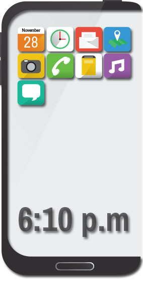
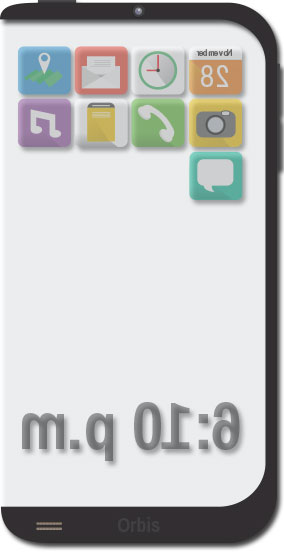
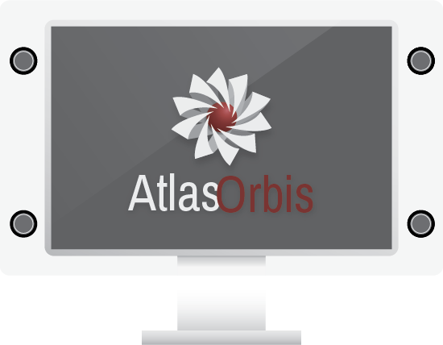
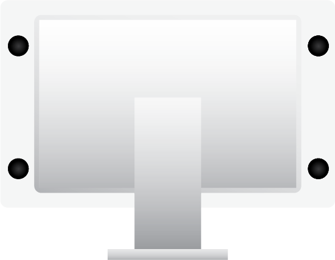

Convenience
We take our cellular devices everywhere. They are some of the most powerful devices in the world. With its small compact design, we can take Orbis anywhere. We can further expand its capabilities when paired with an Atlas.

Powerful
Orbis is a pocket computer that you take everywhere. It's compact design is created using nano microchip engineering and fiber optic wiring that mesh in perfect harmony. The revolutionary 128-bit processor is unmatched anywhere in the world.
A step further
With nano-engineering, we can get to the smallest, most powerful hardware available. Backed with our simple, elegant 128-bit operating system, we have created the most advanced cellular device as well as the most powerful computer - EVER.


Atlas
When Orbis is paired with Atlas, a whole new level of capabilites are revealed. Atlas is a revolutionary heads-up-display that further expand what Orbis can do. It provides hundreds of millions of pixels compacted onto a 27" by 14" display. Made of Nano-Glass and Aircraft Aluminum, Atlas is lightweight and economically efficient in everyway. All components of Atlas are recycled, reused and reassembled to bring you the sharpest display - EVER.

Orbis and Atlas will arrive in 2020
Contact Us for Pre-Order
Coming in 2020, Orbis and Atlas will revolutionize the industry. Be the first to own this landmark device. With your help, Orbis and Atlas will become the next widely used device on the planet. We have the resources needed to build it, we just need your funding to make it a reality.
Learn more by stopping by our offices and be added to our mailing list. Everyday, we make strides in providing and engineering the steps in enhancing Orbis. Atlas is built and ready for manufacturing.